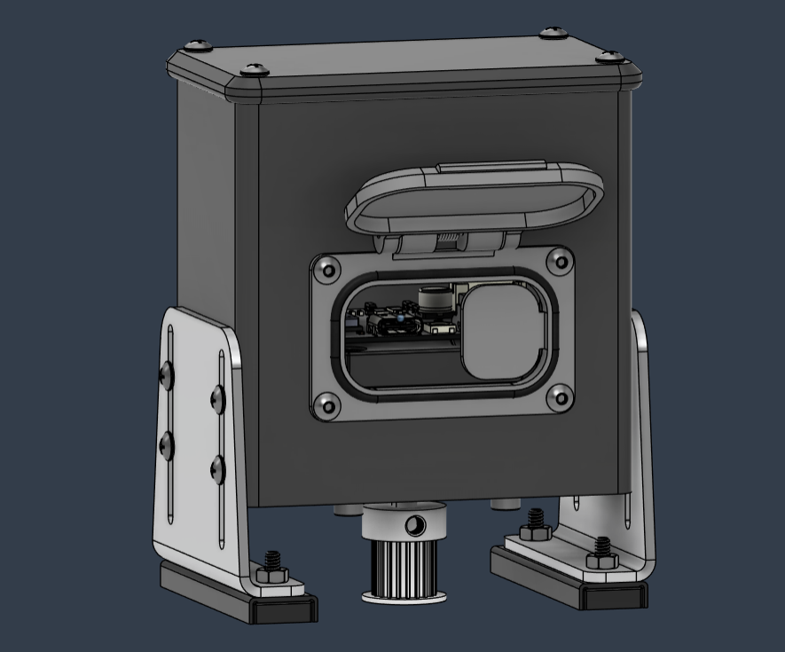
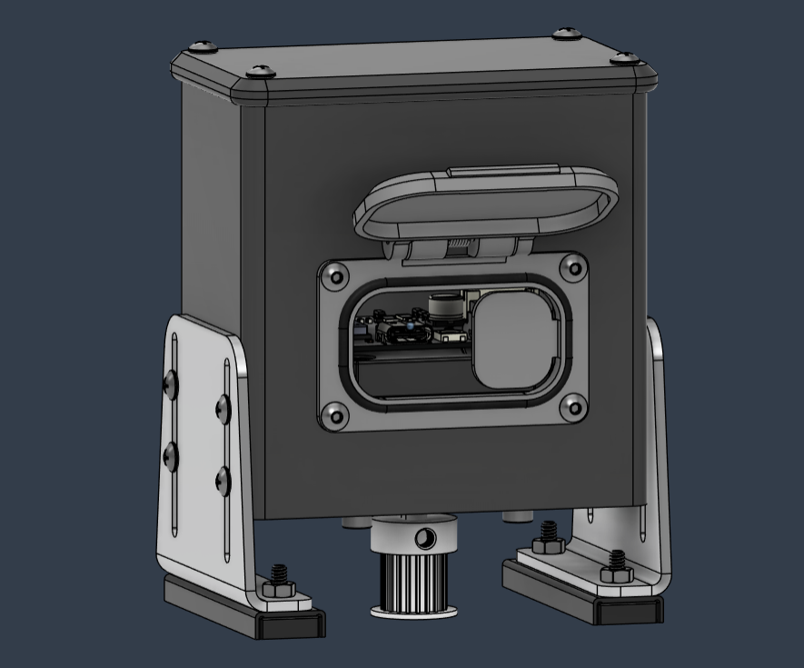

Hello, I'm
Andrew Grow


Im a dedicated embedded software engineer with a strong foundation in diagnosing, developing, and testing embedded systems for safety-critical defense applications. Adept at developing high-complexity solutions with strong problem-solving skills and a drive to develop cutting edge technology. I have a passion for creating innovative solutions to everyday problems. With a background in embedded systems and a keen interest in developing high-performance software, I strive to push the boundaries of technology. My experience spans across various projects, from remote welder controllers to machine learning classifiers, showcasing my versatility and dedication to the field.


 
